Data Type Conversion in Pandas
Master professional type conversion: audit mixed types in object columns, cast safely with astype(), parse robustly with pd.to_numeric() and pd.to_datetime(), handle missing values with nullable Int64 and boolean, prevent the fatal bool("False") trap, preserve leading zeros in identifiers, and unlock up to 98% memory savings with ordered category dtypes.
1. Introduction: Why Data Types Matter
Imagine kijiye aapke college ka examination cell ek raw CSV file export karta hai:
- Student ke marks dekhne mein numbers lagte hain (
"85","92"), lekin Python unhe text strings samajh raha hai. - College fees column mein currency symbols hain (
"₹45,000"). - Admission dates simple strings hain (
"2026-01-10"). - Library card IDs ke aage zeros hain (
"00101").
Jab aap in marks ka average nikalne ke liye df["marks"].mean() run karte hain, toh Pandas ya toh TypeError: Could not convert ... to numeric throw kar deta hai, ya phir "85" + "92" ko jodkar string concatenation "8592" bana deta hai!
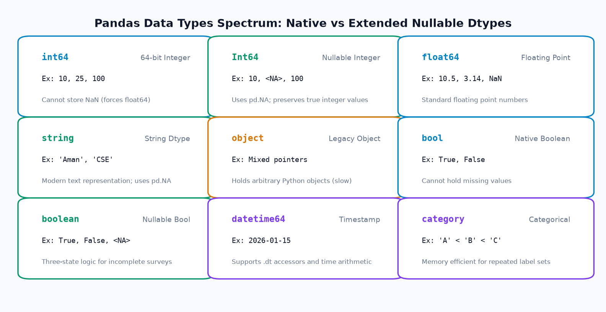
Appearance vs Reality: Value Appearance vs Column Dtype
Data engineering ka sabse pehla lesson yeh hai: Screen par koi value kaisi dikhti hai, aur computer ki memory mein uska actual Data Type kya hai — yeh dono alag baatein hain!
Agar aapke screen par 85 likha hai, lekin column ka dtype object hai, toh computer ke liye yeh ek number nahi balki ek text phrase hai (jaise "hello"). Jab tak aap explicitly column ko numeric type mein convert nahi karte, tab tak mathematical sum, average, sorting, aur machine learning models fail ho jayenge.
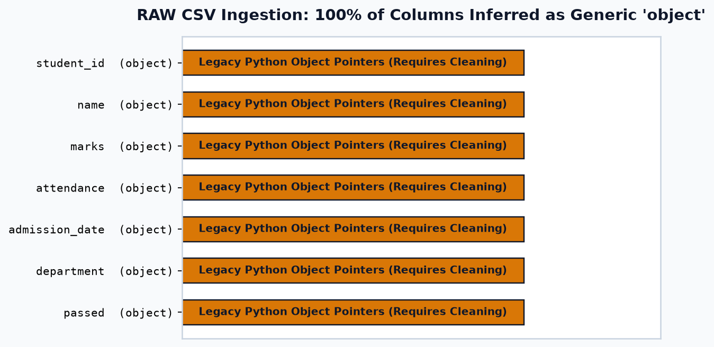
Beginners aksar sochte hain ki Pandas mein object dtype ka matlab pure text string hota hai. Yeh bilkul galat hai! object dtype asal mein generic Python pointer array hota hai. Ek hi object column ke andar integer (101), string ("102"), float (103.5), aur boolean (True) mix ho sakte hain! Isliye jab tak aap specific dtypes enforce nahi karte, aapka pipeline unreliable rehta hai.
Why Correct Data Types Matter in Enterprise Systems
- Mathematical & Statistical Operations: Average, standard deviation, aur sums tabhi compute hote hain jab column
int64,Int64, yafloat64ho. - Chronological Sorting: Text dates ko sort karne par alphabetical order aati hai (e.g., February April se pehle aa jata hai!). True chronological order sirf
datetime64[ns]se milti hai. - Memory Optimization: String object column ko
categorymein convert karne se 90% se 98% memory save ho sakti hai! - Machine Learning Compatibility: Scikit-learn algorithms (Regression, Random Forest, Neural Networks) string inputs accept nahi karte; unhe strict numeric arrays chahiye hote hain.
2. Inspecting Data Types Before Conversion
Kisi bhi column ko convert karne se pehle uske underlying structure ko inspect karna mandatory hai. Pandas hume inspection ke liye 4 standard tools deta hai:
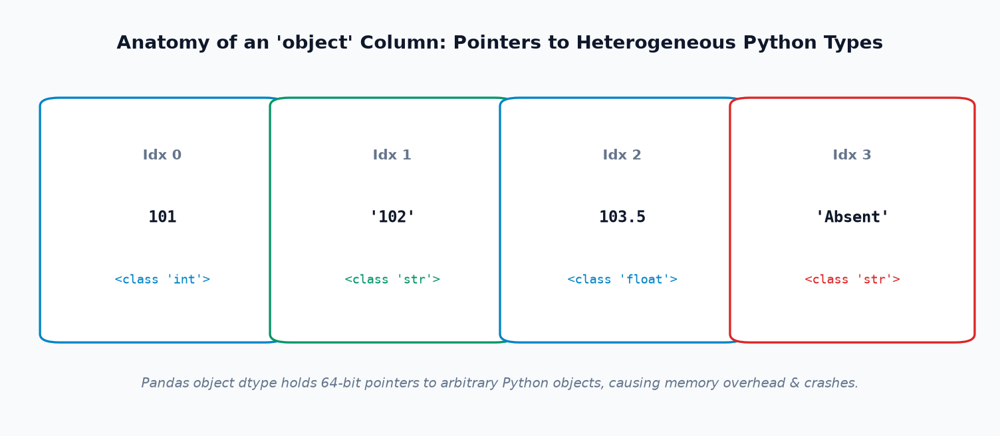
Core Inspection Methods Cheat Sheet
| Method | Python Syntax | What it Reveals |
|---|---|---|
df.dtypes |
df.dtypes |
Dataset ke sabhi columns ke current dtypes ki clean summary Series. |
df.info() |
df.info() |
Column names, non-null counts, dtypes, aur approximate memory usage. |
s.dtype |
df['marks'].dtype |
Single column ka exact data type. |
| Mixed-Type Audit | s.map(lambda x: type(x).__name__).value_counts() |
Column ke andar chupe huye actual Python types (e.g. kitne int hain, kitne str hain). |
select_dtypes() |
df.select_dtypes(include=['number']) |
Sirf specific type ke columns filter karna (e.g. numeric ya categorical). |
Example 1: Uncovering Mixed Python Types in College Records
import pandas as pd # Simulated raw data with mixed Python types in an object column s_mixed = pd.Series([85, "92", 78, "Absent", 90.5]) print("Pandas Reported Dtype:", s_mixed.dtype) print("\nActual Python Underlying Types Breakdown:") types_breakdown = s_mixed.map(lambda x: type(x).__name__).value_counts() print(types_breakdown)
Output Explanation: Pandas ne pure column ko object report kiya, lekin inspection se reveal hua ki andar 2 integers, 2 strings, aur 1 float chupa hua hai! Yeh proof hai ki object par direct math lagana crash cause karega.
Example 2: Inspecting E-Commerce Sales Schema with select_dtypes()
import pandas as pd df_orders = pd.DataFrame({ "order_id": ["00501", "00502"], "qty": [2, 5], "price_str": ["₹1,299.00", "₹4,500.00"], "is_dispatched": [True, False] }) print("--- 1. All Column Dtypes ---") print(df_orders.dtypes) print("\n--- 2. Selecting Only Integer Columns ---") print(df_orders.select_dtypes(include=["integer"]).columns.tolist()) print("\n--- 3. Selecting Object Columns Requiring Cleaning ---") print(df_orders.select_dtypes(include=["object"]).columns.tolist())
3. Basic Type Casting with astype()
Pandas mein type conversion ka sabse basic method hai Series.astype() aur DataFrame.astype(). Yeh method data values ko specify kiye gaye target dtype mein forcefully cast karta hai.
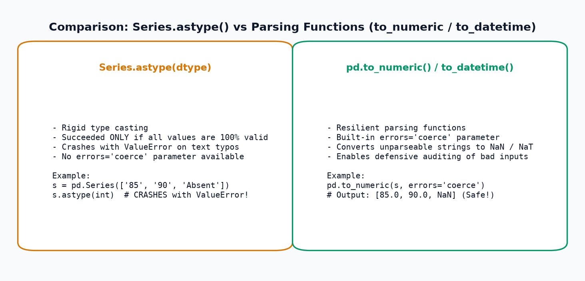
When is astype() Appropriate?
- Jab data 100% clean ho aur aapko guarantee ho ki koi invalid string ya unexpected typo nahi hai.
- Jab aap kisi numeric float ko integer mein truncate kar rahe hon.
- Jab aap values ko explicit string ya categorical format mein convert kar rahe hon.
Agar aapke column mein koi bhi ek non-numeric word aa gaya (jaise "unknown", "N/A", ya "Absent"):
pd.Series(["85", "90", "unknown"]).astype(int)
Toh Python turant ValueError: invalid literal for int() with base 10: 'unknown' raise karke execution crash kar dega! astype() ke paas koi errors='coerce' parameter nahi hota. Dirty data ke liye hamesha parsing functions use karein.
Example 1: Clean Type Casting on Clean Data
import pandas as pd df_clean = pd.DataFrame({ "student_name": ["Aman", "Priya", "Rahul"], "marks_str": ["85", "92", "76"], "fee_int": [45000, 52000, 48000] }) # 1. Single column cast to int df_clean["marks"] = df_clean["marks_str"].astype(int) # 2. Single column cast to float64 df_clean["fee_float"] = df_clean["fee_int"].astype("float64") print("Converted Columns Dtypes:") print(df_clean[["marks", "fee_float"]].dtypes) print("\nAverage Marks:", df_clean["marks"].mean())
Example 2: Multi-Column Conversion with Dictionary
Aap ek single operation mein pure DataFrame ke multiple columns ko dictionary mapping ke through convert kar sakte hain:
import pandas as pd df_inventory = pd.DataFrame({ "item": ["Mouse", "Keyboard"], "quantity": ["5", "10"], "unit_price": ["650.5", "1200.0"] }) # Multi-column conversion dictionary dtype_schema = { "quantity": "int64", "unit_price": "float64" } df_inventory = df_inventory.astype(dtype_schema) df_inventory["total_stock_value"] = df_inventory["quantity"] * df_inventory["unit_price"] print(df_inventory)
4. Robust Numeric Parsing with pd.to_numeric()
Real-world data clean nahi hota; usme typos ("Absent", "N/A"), currency symbols ("₹", "$"), aur commas hote hain. Aise messy columns ke liye pd.to_numeric() gold standard tool hai.
Understanding the 'errors' Parameter
| Option | Syntax | Behavior on Invalid Input | Production Recommendation |
|---|---|---|---|
| errors="raise" (Default) |
pd.to_numeric(s, errors="raise") |
Invalid string encounter hote hi ValueError raise karke execution crash kar deta hai. |
Jab bad data immediate pipeline halt require karta ho. |
| errors="coerce" | pd.to_numeric(s, errors="coerce") |
Invalid non-numeric values ko safely NaN mein convert karta hai bina crash kiye! |
Standard for Dirty Data Ingestion |
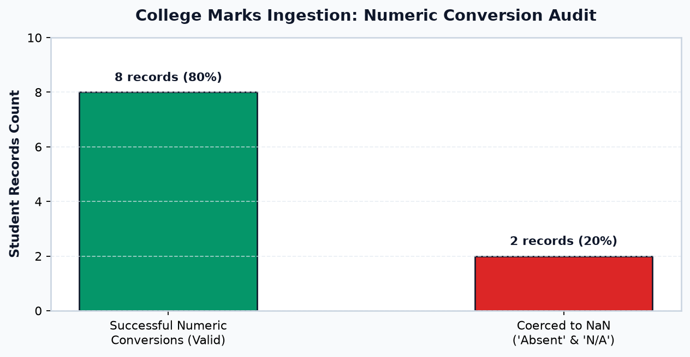
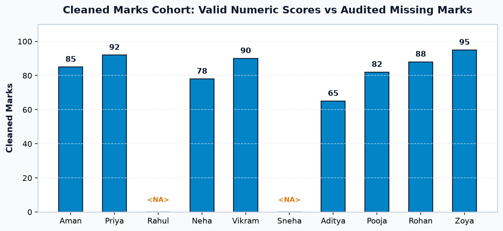
Example 1: Parsing College Marks with Coercion & Auditing
import pandas as pd import numpy as np raw_marks = pd.Series(["85", "92", "Absent", "78", "N/A"]) # 1. Coerce to numeric (float64) marks_clean = pd.to_numeric(raw_marks, errors="coerce") # 2. Defensive Audit: What rows failed conversion? failed_mask = marks_clean.isna() & raw_marks.notna() failed_audit_df = pd.DataFrame({ "raw_input": raw_marks[failed_mask], "coerced_result": marks_clean[failed_mask] }) print("Cleaned Numeric Series:") print(marks_clean) print("\nAudit of Conversion Failures:") print(failed_audit_df) print("\nCohort Average (Valid Scores):", marks_clean.mean())
Agar student exam mein "Absent" tha aur aapne marks.fillna(0) kar diya, toh cohort average 85.0 se girkar 51.0 ho jayega! Aur machine learning model student ko zero marks maan kar fail classify kar dega. Hamesha missing values ko transparently audit karein aur unke liye separate boolean flag rakhein.
Example 2: Cleaning Currency Strings Before Numeric Conversion
Currency symbols (₹, $) aur thousands separators (,) ko pehle regex ke through remove kiya jata hai:
import pandas as pd prices_raw = pd.Series(["₹1,299.00", "850", "₹1,499.50", "unknown"]) # 1. Regex strip currency symbols and commas prices_stripped = prices_raw.astype(str).str.replace(r"[₹,]", "", regex=True).str.strip() # 2. Coerce numeric prices_numeric = pd.to_numeric(prices_stripped, errors="coerce") print("Cleaned Prices:") print(prices_numeric) print("Total Verified Catalog Value: ₹", prices_numeric.dropna().sum())
5. Converting to Nullable Integer (Int64) and Boolean (boolean)
Standard NumPy int64 dtype ki ek sabse badi technical limitation hai: Standard integer arrays missing values (np.nan) store nahi kar sakte!
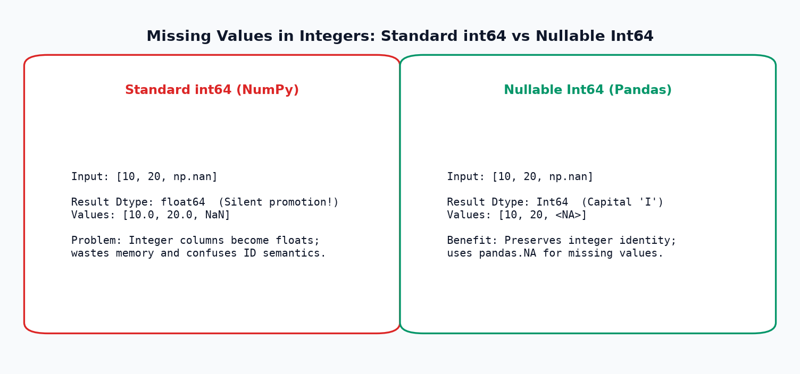
The Silent Type Promotion Trap
Agar aapke paas integers hain (jaise student marks: 85, 92) aur unme ek single np.nan aa gaya, toh standard NumPy pure column ko silently float64 bana deta hai (85.0, 92.0). Isse IDs aur quantities ke integer semantics destroy ho jaate hain.
Is problem ko solve karne ke liye Pandas ne Nullable Integer (Int64 with capital 'I') introduce kiya, jo pd.NA sentinel use karta hai aur missing values ke bawajood integers ko intact rakhta hai.
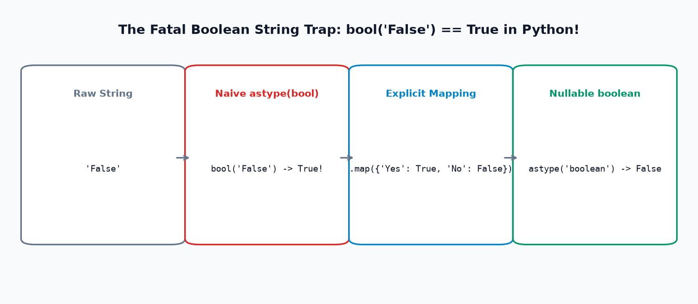
The Fatal Boolean String Trap: bool("False") == True
Python mein har non-empty string truthy hoti hai! Dekhiye standard Python behavior:
bool("True") # -> True
bool("False") # -> True! (Kyunki string non-empty hai!)
Agar aapne df['passed'].astype(bool) kar diya, toh har student jisne "False" ya "No" likha tha, woh automatically True ho jayega!
Comparative Dtype Capabilities Table
| Dtype | Origin | Can Hold Missing? | Missing Sentinel | Best Production Use Case |
|---|---|---|---|---|
int64 |
NumPy | No (forces float) | None | Strict non-nullable counts (e.g. array index). |
| Int64 | Pandas | Yes | pd.NA |
Integer features with missing entries (marks, ages, stock). |
float64 |
NumPy | Yes | np.nan |
Continuous decimal values (prices, percentages, sensor data). |
bool |
NumPy | No | None | Binary flags where every single row is guaranteed True/False. |
| boolean | Pandas | Yes | pd.NA |
Three-state logic: True, False, and Unknown (Survey responses). |
Example 1: Safe Nullable Integer (Int64) Conversion
import pandas as pd import numpy as np raw_scores = pd.Series(["85", "92", "Absent", "78"]) # Coerce to float first to handle 'Absent' scores_float = pd.to_numeric(raw_scores, errors="coerce") # Convert to Nullable Int64 scores_int64 = scores_float.astype("Int64") print("Nullable Int64 Series:") print(scores_int64) print("Dtype:", scores_int64.dtype) print("Is Index 2 Missing?", pd.isna(scores_int64.iloc[2]))
Example 2: Safe Three-State Nullable Boolean Conversion
Survey responses mein customer ne "Yes", "No" bola ya answer blank chhod diya:
import pandas as pd survey_raw = pd.Series(["Yes", "No", "YES", "no", None, "Refused"]) # 1. Defensive mapping dictionary bool_map = { "yes": True, "no": False } # 2. Normalize and map to nullable boolean survey_norm = survey_raw.astype(str).str.strip().str.lower() survey_bool = survey_norm.map(bool_map).astype("boolean") print("Nullable Boolean Series:") print(survey_bool) print("\nValue Counts (including NA):") print(survey_bool.value_counts(dropna=False))
6. Converting Strings Safely & Preserving Identifiers
Modern Pandas mein text columns ke liye string dtype introduce kiya gaya hai. Legacy object dtype ke mukable, string dtype explicitly guarantee karta hai ki column mein sirf text characters aur missing values (pd.NA) hain.
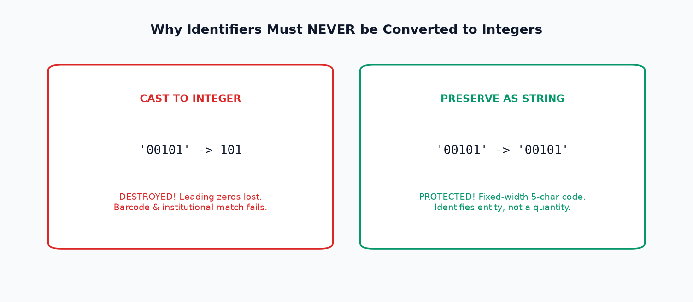
Agar kisi column mein sirf digits hain (jaise Student ID: "00101", Order ID: "00501", PIN code: "01100"), toh beginners use astype(int) kar dete hain. Aisa karne par leading zeros permanently delete ho jaate hain! "00101" ban jayega 101. Jab aap use institutional barcode scanner ya database foreign key se match karenge toh match fail ho jayega!
Rule: Agar kisi field par mathematical calculation (add, subtract, average) nahi karni hai, toh woh ek Identifier hai — use hamesha string dtype mein rakhein.
Example 1: Preserving Leading Zeros in Student IDs
import pandas as pd student_ids = pd.Series(["00101", "00102", "00103"]) # The Destructive Mistake: bad_cast = student_ids.astype(int) # The Professional Solution: safe_cast = student_ids.astype("string") print("Raw Ingestion:", student_ids.iloc[0]) print("Destructive Integer Cast (Lost Zeros!):", bad_cast.iloc[0]) print("Safe String Cast (Zeros Preserved!):", safe_cast.iloc[0])
Example 2: Safe String Operations with Modern 'string' Dtype
Modern string dtype missing values ke sath seamlessly behave karta hai aur vectorised methods support karta hai:
import pandas as pd departments = pd.Series([" CSE ", "it", None, " ECE"], dtype="string") cleaned_depts = departments.str.strip().str.upper() print("Cleaned Departments:") print(cleaned_depts) print("Dtype:", cleaned_depts.dtype)
7. Converting Strings to Datetime
Dates ko strings ke form mein chhod dena analytics ka sabse bada risk hota hai. Strings alphabetical order mein sort hoti hain na ki chronological order mein!
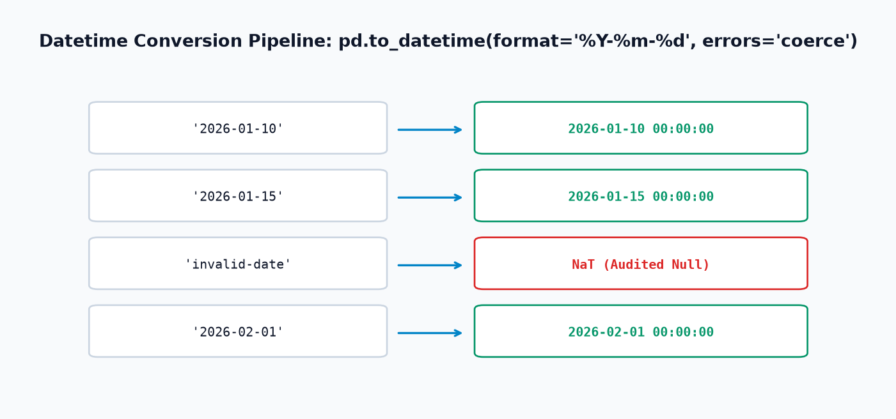
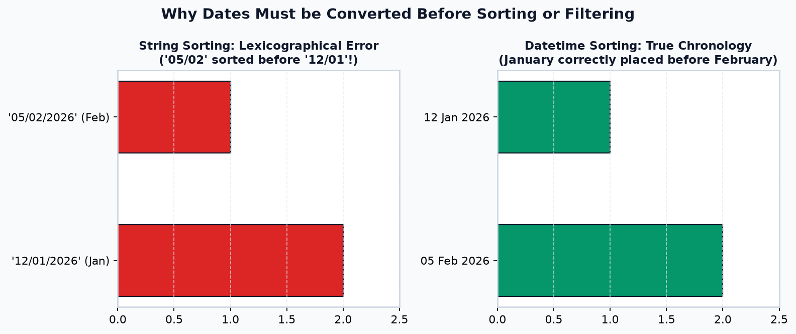
The Ambiguous Date Problem: 03/04/2026
Kya "03/04/2026" ka matlab 4 March 2026 hai (US: MM/DD/YYYY) ya 3 April 2026 (UK/India: DD/MM/YYYY)?
Bina explicit format= declare kiye Pandas guess karega, jisse 50% data silently corrupt ho sakta hai. Production pipelines mein hamesha explicit format string pass kijiye:
format="%Y-%m-%d"for ISO standard (e.g.2026-01-15).format="%d/%m/%Y"for Indian/European standard (e.g.15/01/2026).
Example 1: Parsing College Admission Dates with Component Extraction
import pandas as pd raw_dates = pd.Series(["2026-01-10", "2026-01-15", "invalid-date", "2026-02-01"]) # Parse with explicit ISO format and error coercion dates_clean = pd.to_datetime(raw_dates, format="%Y-%m-%d", errors="coerce") # Extracting temporal features using .dt accessor df_temporal = pd.DataFrame({ "parsed_date": dates_clean, "admission_year": dates_clean.dt.year, "admission_month": dates_clean.dt.month_name(), "day_of_week": dates_clean.dt.day_name() }) print(df_temporal)
Example 2: Demonstrating True Chronological Sorting
import pandas as pd df_events = pd.DataFrame({ "event": ["Workshop", "Orientation"], "date_str": ["05/02/2026", "12/01/2026"], # Feb 5 vs Jan 12 "date_dt": pd.to_datetime(["2026-02-05", "2026-01-12"]) }) print("--- String Sorting (Alphabetical Error) ---") print(df_events.sort_values("date_str")[["event", "date_str"]]) print("\n--- Datetime Sorting (True Chronology) ---") print(df_events.sort_values("date_dt")[["event", "date_dt"]])
8. Categorical Dtype (category) & Memory Savings
Jab kisi column mein bahut saari rows hon lekin unique values ka count bahut chota ho (jaise Department: CSE, IT, ECE; ya Grade: A, B, C, D), tab us column ko category dtype mein convert kiya jata hai.
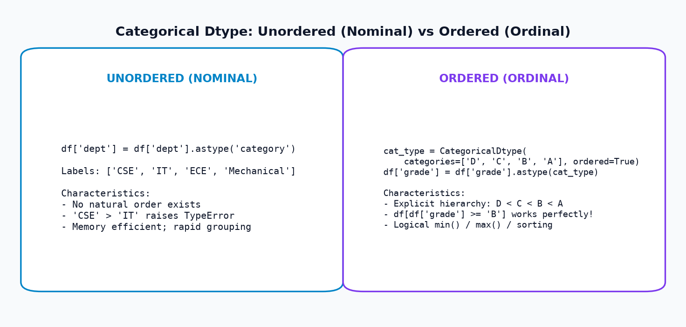
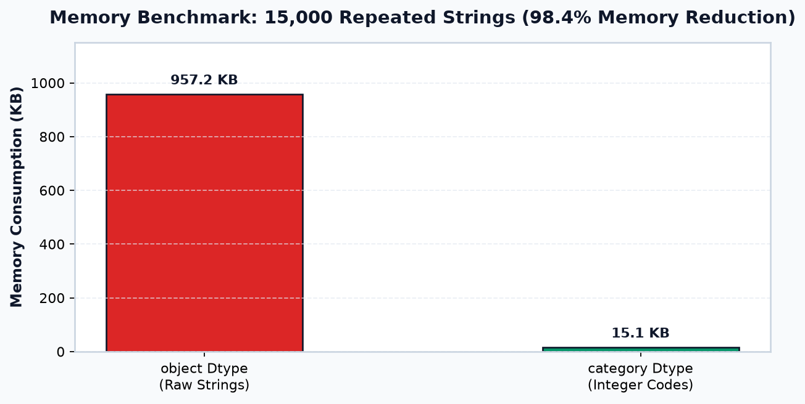
Unordered vs. Ordered Categories
- Unordered (Nominal): Jaise
["CSE", "IT", "ECE"]. Koi department doosre se bada ya chota nahi hota.df['dept'] > 'IT'invalid hoga. - Ordered (Ordinal): Jaise Student Grades
["D", "C", "B", "A"]ya T-shirt sizes["S", "M", "L", "XL"]. Yahan explicit natural hierarchy exist karti hai. Ordered category set karne par aapdf[df['grade'] >= 'B']filter kar sakte hain!
Example 1: Implementing Ordered Academic Grades
import pandas as pd # 1. Define explicit ordinal hierarchy: D < C < B < A grade_type = pd.CategoricalDtype( categories=["D", "C", "B", "A"], ordered=True ) df_grades = pd.DataFrame({ "student": ["Aman", "Priya", "Rahul", "Neha"], "grade_str": ["A", "C", "B", "D"] }) df_grades["grade"] = df_grades["grade_str"].astype(grade_type) # Filter students who scored grade B or higher top_students = df_grades[df_grades["grade"] >= "B"] print("Ordered Grade Dtype:", df_grades["grade"].dtype) print("\nStudents with Grade >= B:") print(top_students[["student", "grade"]])
Example 2: Demonstrating 98% Memory Savings in E-Commerce
import pandas as pd # 15,000 product transactions with repeated category strings repeated_cats = pd.Series(["Electronics", "Apparel & Footwear", "Home & Kitchen"] * 5000) mem_raw = repeated_cats.memory_usage(deep=True) / 1024.0 cat_series = repeated_cats.astype("category") mem_cat = cat_series.memory_usage(deep=True) / 1024.0 print(f"Memory Usage as Object Dtype: {mem_raw:.1f} KB") print(f"Memory Usage as Category Dtype: {mem_cat:.1f} KB") print(f"Memory Optimization Ratio: {(mem_raw - mem_cat) / mem_raw * 100:.1f}% reduction!")
9. Converting Multiple Columns & Building Reusable Workflows
Real-world enterprise pipelines mein alag-alag columns alag conversion techniques demand karte hain. Sabhi methods ko ek readable, step-by-step modular pipeline mein combine karna hota hai.
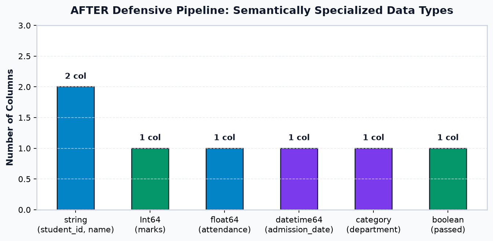
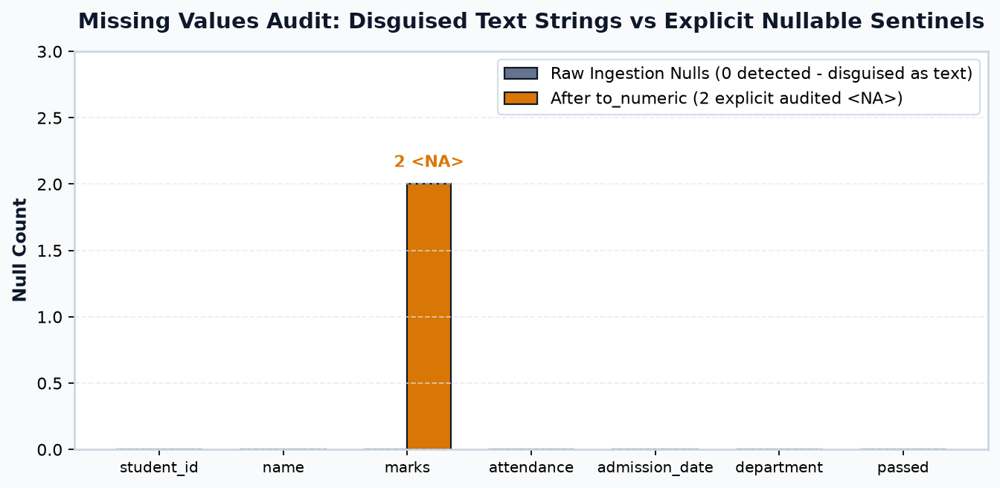
The 5 Principles of a Reusable Type Conversion Pipeline
- Preserve Raw Lineage: Hamesha
df_raw = df.copy()se start karein. - Preserve Fixed Codes: IDs aur barcodes ko kabhi numbers mat banayein;
astype('string')use karein. - Strip Formatting First: Numbers aur dates parse karne se pehle currency symbols aur commas regex se hatayein.
- Coerce & Audit: Missing ya corrupt values ke liye
errors='coerce'use karein aur conversion failures note karein. - Enforce Nullable & Categorical Dtypes: Integer missingness ke liye
Int64, booleans ke liyeboolean, aur repeated categories ke liyecategoryset karein.
10. Top 12 Common Data Type Conversion Mistakes
Data type conversion mein hone wali galtiyan aksar silent hoti hain (code bina error diye galat answer calculate kar deta hai). Yahan 12 critical mistakes hain:
Trap 1: Calling astype(int) on messy string columns
Faulty Code: df['marks'].astype(int) jab column mein "Absent" ya "N/A" ho.
Correction: pd.to_numeric(df['marks'], errors='coerce').astype('Int64').
Trap 2: Converting columns with missing values to standard int64
Faulty Code: df['count'] = df['count'].astype(int) jab null values exist karti hon.
Correction: Nullable integer astype('Int64') use karein.
Trap 3: Treating errors='coerce' as an automatic data fix
Faulty Code: pd.to_numeric(s, errors='coerce') karke conversion failures ko audit na karna.
Correction: Hamesha check karein: raw[clean.isna() & raw.notna()].
Trap 4: Replacing failed conversions with zero without domain approval
Faulty Code: df['marks'].fillna(0) absent student ke liye.
Correction: Missing values ko separate boolean column is_absent = True se track karein.
Trap 5: Converting an ID column into an integer and losing leading zeros
Faulty Code: df['student_id'].astype(int) $\to$ "00101" becomes 101.
Correction: df['student_id'].astype('string') preserve karein.
Trap 6: Removing commas or currency symbols without checking format
Faulty Code: European numbers ("1.250,50") par simple replace laga dena.
Correction: International decimal convention inspect karke regex pattern use karein.
Trap 7: Misinterpreting ambiguous dates
Faulty Code: pd.to_datetime("03/04/2026") bina format ya dayfirst ke.
Correction: Explicit format declare karein: pd.to_datetime(s, format="%d/%m/%Y").
Trap 8: The fatal bool("False") == True trap
Faulty Code: s.astype(bool) jab strings "False" ya "No" hon.
Correction: s.map({"Yes": True, "No": False}).astype("boolean").
Trap 9: Assuming 'object' always means clean text
Faulty Code: df['col'].str.strip() chalana jab column mein mixed integers hon.
Correction: Pehle .astype(str) ya astype('string') lagayein.
Trap 10: Failing to inspect values after conversion
Faulty Code: Conversion command execute karke output verify na karna.
Correction: assert df['price'].dtype == 'float64' run karein.
Trap 11: Mutating raw DataFrame without .copy()
Faulty Code: Raw ingested DataFrame par seedhe inplace conversion karna.
Correction: df_clean = df_raw.copy() banayein.
Trap 12: Using categorical dtype without defining intended order
Faulty Code: Academic grades ['A', 'B', 'C'] ko default unordered category bana dena.
Correction: CategoricalDtype(categories=['D','C','B','A'], ordered=True) use karein.
Quick-Reference Problem-Solver Table
| Problem / Data Issue | Recommended Conversion Method | Important Caution |
|---|---|---|
Numeric column contains "Absent" / "N/A" |
pd.to_numeric(s, errors='coerce').astype('Int64') |
Do not fillna(0) without domain approval. |
Price contains "₹" and commas ("₹1,299.50") |
s.str.replace(r'[₹,]', '', regex=True).pipe(pd.to_numeric) |
Check for non-numeric words like "unknown". |
ID column contains leading zeros ("00101") |
s.astype("string") |
NEVER cast to integer. |
| Date column in mixed/ambiguous format | pd.to_datetime(s, format="%Y-%m-%d", errors='coerce') |
Declare explicit format string. |
Survey boolean column has "Yes" / "No" |
s.map({"Yes": True, "No": False}).astype("boolean") |
Never use astype(bool) directly. |
| Repeated category strings (e.g. 50,000 rows) | s.astype("category") |
Use ordered=True only when natural hierarchy exists. |
11. Real-World Case Study A: College Student Data Converter
Aaiye University Examination Cell ke ek complete messy raw cohort dataset ko 5-stage defensive conversion pipeline ke through convert karein.
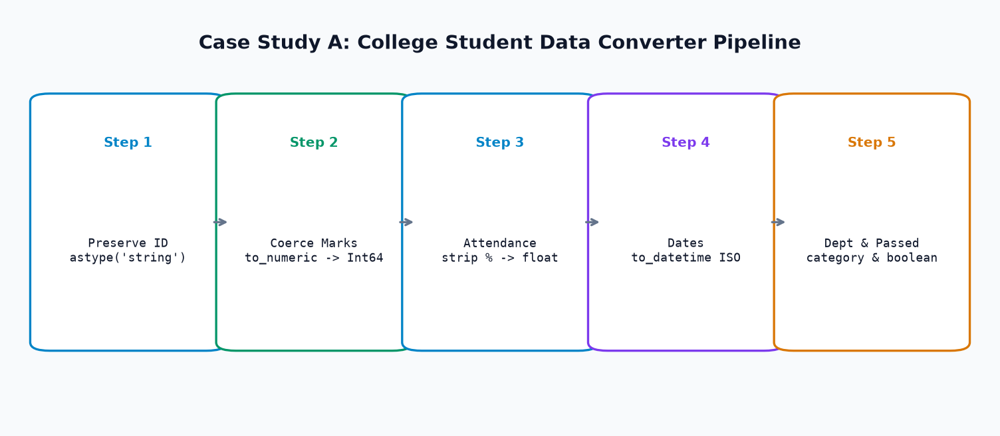
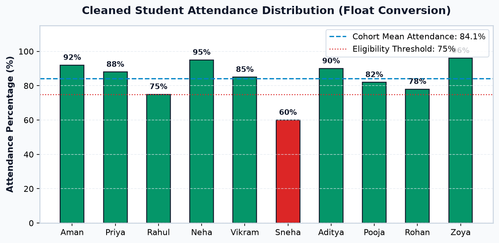
Complete Executable Pipeline Code
import pandas as pd import numpy as np # ============================================================================== # STAGE 1: INGEST RAW DIRTY STUDENT EXAMINATION DATASET # ============================================================================== raw_college = { "student_id": ["00101", "00102", "00103", "00104", "00105", "00106", "00107", "00108", "00109", "00110"], "name": ["Aman Sharma", "Priya Patel", "Rahul Verma", "Neha Singh", "Vikram Malhotra", "Sneha Kulkarni", "Aditya Joshi", "Pooja Reddy", "Rohan Mehra", "Zoya Khan"], "marks": ["85", "92", "Absent", "78", "90", "N/A", "65", "82", "88", "95"], "attendance": ["92%", "88%", "75%", "95%", "85%", "60%", "90%", "82%", "78%", "96%"], "admission_date": ["2026-01-10", "2026-01-12", "2026-01-15", "2026-01-18", "2026-01-20", "2026-01-22", "2026-01-25", "2026-01-28", "2026-02-01", "2026-02-05"], "department": [" CSE ", "IT", "cse", "Computer Science", "ECE", "it", "Information Tech", "Mech Engg", "Civil", "CSE"], "passed": ["Yes", "Yes", "No", "Yes", "Yes", "No", "Yes", "Yes", "Yes", "Yes"] } df_college_raw = pd.DataFrame(raw_college) df_college = df_college_raw.copy() # ============================================================================== # STAGE 2: PRESERVE IDENTIFIERS AS STRING # ============================================================================== df_college["student_id"] = df_college["student_id"].astype("string") df_college["name"] = df_college["name"].astype("string") # ============================================================================== # STAGE 3: COERCE MARKS TO NULLABLE Int64 # ============================================================================== marks_numeric = pd.to_numeric(df_college["marks"], errors="coerce") df_college["marks"] = marks_numeric.astype("Int64") # ============================================================================== # STAGE 4: CLEAN ATTENDANCE TO FLOAT PERCENTAGE # ============================================================================== att_clean = df_college["attendance"].astype(str).str.replace("%", "", regex=False).str.strip() df_college["attendance_pct"] = pd.to_numeric(att_clean, errors="coerce") # ============================================================================== # STAGE 5: PARSE DATES, CATEGORIES & NULLABLE BOOLEAN # ============================================================================== df_college["admission_date"] = pd.to_datetime(df_college["admission_date"], format="%Y-%m-%d") dept_map = { "cse": "CSE", "computer science": "CSE", "it": "IT", "information tech": "IT", "ece": "ECE", "mech engg": "Mechanical", "civil": "Civil" } dept_norm = df_college["department"].astype(str).str.strip().str.lower().replace(dept_map) df_college["department"] = dept_norm.astype("category") passed_map = {"Yes": True, "No": False} df_college["passed"] = df_college["passed"].map(passed_map).astype("boolean") # Assertions assert df_college["student_id"].iloc[0] == "00101", "Leading zeros must be preserved!" assert df_college["attendance_pct"].mean() == 84.1, "Mean attendance must equal 84.1%" print("Final Converted Schema:") print(df_college.dtypes) print("\nConverted Student Records Table:") print(df_college[["student_id", "name", "marks", "attendance_pct", "department", "passed"]])
12. Real-World Case Study B: E-Commerce Sales Data Converter
E-Commerce transactional logs mein financial figures aur order identifiers clean karna mission-critical hota hai. Galat type conversion seedhe tax aur accounting audit failures cause karta hai.
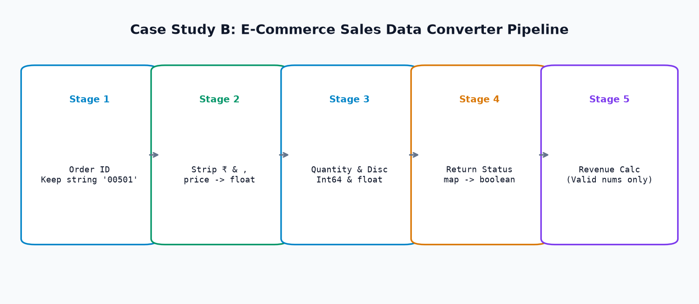
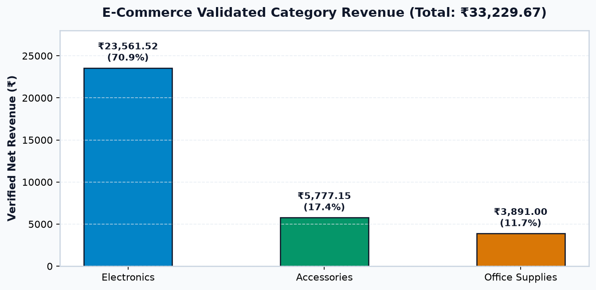
Complete Executable E-Commerce Pipeline Code
import pandas as pd import numpy as np # ============================================================================== # STAGE 1: INGEST RAW DIRTY SALES TRANSACTIONS # ============================================================================== raw_sales = { "order_id": ["00501", "00502", "00503", "00504", "00505", "00506", "00507", "00508", "00509", "00510"], "product_name": ["Wireless Mouse", "Mechanical Keyboard", "USB-C Hub", "Gaming Monitor", "Laptop Stand", "Webcam HD", "Desk Mat", "Headphones", "Cable Organizer", "Screen Cleaner"], "price": ["₹1,299.00", "₹4,500.00", "₹850.00", "₹18,999.00", "₹1,499.50", "unknown", "₹599.00", "₹2,499.00", "₹299.00", "₹199.00"], "quantity": ["2", "1", "3", "1", "2", "1", "4", "1", "5", "2"], "discount": ["10%", "15%", "0%", "20%", "5%", "10%", "0%", "12%", "0%", "5%"], "order_date": ["2026-02-01", "2026-02-02", "2026-02-03", "2026-02-04", "2026-02-05", "2026-02-06", "2026-02-07", "2026-02-08", "2026-02-09", "2026-02-10"], "is_returned": ["No", "No", "Yes", "No", "No", None, "No", "Yes", "No", "No"], "category": ["Electronics", "Electronics", "Accessories", "Electronics", "Accessories", "Electronics", "Office", "Electronics", "Office", "Accessories"] } df_sales = pd.DataFrame(raw_sales) # Preserve leading zeros in order_id df_sales["order_id"] = df_sales["order_id"].astype("string") # Clean price: regex strip currency and coerce p_clean = df_sales["price"].astype(str).str.replace(r"[₹,]", "", regex=True).str.strip() df_sales["price_cleaned"] = pd.to_numeric(p_clean, errors="coerce") # Clean quantity to Nullable Int64 df_sales["quantity"] = pd.to_numeric(df_sales["quantity"], errors="coerce").astype("Int64") # Clean discount to decimal float rate d_clean = df_sales["discount"].astype(str).str.replace("%", "", regex=False).str.strip() df_sales["discount_rate"] = pd.to_numeric(d_clean, errors="coerce") / 100.0 # Date parsing df_sales["order_date"] = pd.to_datetime(df_sales["order_date"], format="%Y-%m-%d") # Nullable boolean mapping ret_map = {"Yes": True, "No": False} df_sales["is_returned"] = df_sales["is_returned"].map(ret_map).astype("boolean") # Category df_sales["category"] = df_sales["category"].astype("category") # Revenue calculation ONLY on valid numeric rows df_sales["line_total"] = df_sales["price_cleaned"] * df_sales["quantity"] * (1 - df_sales["discount_rate"]) verified_rev = df_sales["line_total"].dropna().sum() print(f"Total Validated Revenue: ₹{verified_rev:,.2f}") assert round(verified_rev, 2) == 33229.67, "Revenue calculation must match verified audit sum" print("\nConverted E-Commerce Transactions Table:") print(df_sales[["order_id", "product_name", "price_cleaned", "quantity", "discount_rate", "line_total"]])
13. Strategic Decision Frameworks & Quality Scorecard
Data type conversion ke baad pipeline ki success measure karne ke liye automated scorecards aur strategic decision frameworks use kiye jaate hain:
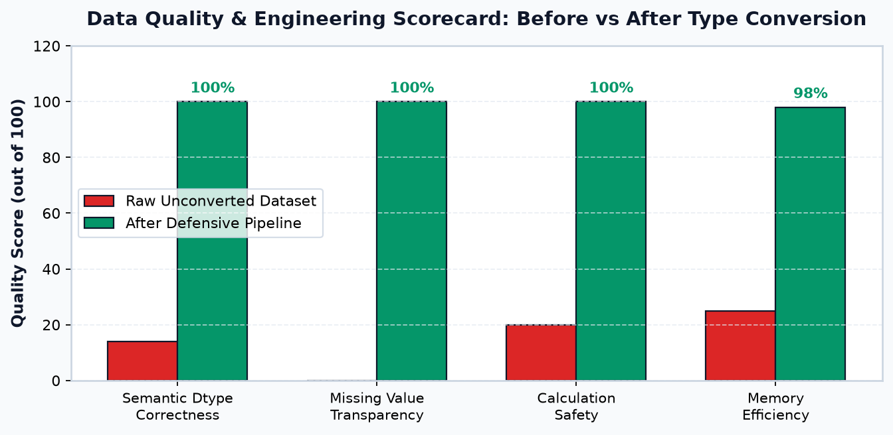
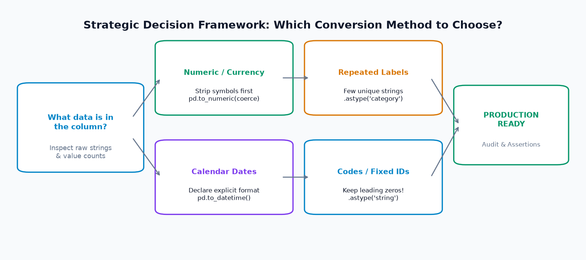
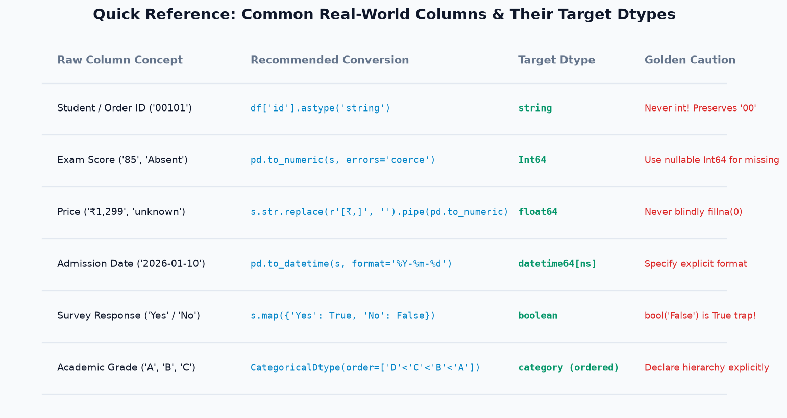
14. Mini-Project: Student Data Type Conversion Lab
Ab aapki baari hai! Niche diye gaye dirty student laboratory dataset ko clean dtypes mein convert karne ke liye starter code aur tasks diye gaye hain.
Project Objectives & Tasks
- Ingest the raw dataset and display
df.dtypes. - Preserve
student_idas string to protect leading zeros ("00201"). - Clean
lab_scoreby coercing to numeric and casting to nullableInt64. - Convert
completion_pctby removing the"%"symbol and casting tofloat64. - Parse
submission_dateusing explicit ISO format"%Y-%m-%d". - Standardize
is_verifiedusing explicit boolean mapping into nullableboolean. - Convert
lab_groupinto an ordered categorical dtype ("Group C" < "Group B" < "Group A"). - Assert that
df['student_id'].iloc[0] == "00201"and export cleaned CSV.
Starter Code
import pandas as pd raw_lab = { "student_id": ["00201", "00202", "00203", "00204"], "name": ["Aarav Sharma", "Diya Patel", "Kabir Singh", "Meera Nair"], "lab_score": ["45", "Absent", "48", "38"], "completion_pct": ["90%", "0%", "96%", "80%"], "submission_date": ["2026-03-01", "2026-03-02", "2026-03-03", "2026-03-04"], "is_verified": ["Yes", "No", "Yes", None], "lab_group": ["Group A", "Group B", "Group A", "Group C"] } df = pd.DataFrame(raw_lab) # TODO: Implement your 7 conversion steps here! # 1. df_clean = df.copy() # 2. astype('string') for IDs # 3. to_numeric(errors='coerce') -> Int64 for lab_score # 4. strip % -> float for completion_pct # 5. to_datetime for submission_date # 6. map to boolean for is_verified # 7. CategoricalDtype for lab_group
View Complete Verified Solution Click to Expand
import pandas as pd df_clean = df.copy() df_clean["student_id"] = df_clean["student_id"].astype("string") df_clean["name"] = df_clean["name"].astype("string") df_clean["lab_score"] = pd.to_numeric(df_clean["lab_score"], errors="coerce").astype("Int64") df_clean["completion_pct"] = pd.to_numeric( df_clean["completion_pct"].str.replace("%", ""), errors="coerce" ) df_clean["submission_date"] = pd.to_datetime(df_clean["submission_date"], format="%Y-%m-%d") v_map = {"Yes": True, "No": False} df_clean["is_verified"] = df_clean["is_verified"].map(v_map).astype("boolean") group_cat = pd.CategoricalDtype(categories=["Group C", "Group B", "Group A"], ordered=True) df_clean["lab_group"] = df_clean["lab_group"].astype(group_cat) print("Cleaned Lab Dataset Schema:") print(df_clean.dtypes) print("\nCleaned Table:") print(df_clean)
15. Interactive Practice Section (39 Questions & Challenges)
Apne concepts ko test karne ke liye niche diye gaye cards par click karke questions solve kijiye aur answers verify kijiye:
Part 1: Beginner Questions (Q1 - Q5)
Q1: What does df.dtypes return in Pandas? Show Answer
Answer: It returns a Series containing the data type of each column in the DataFrame, indexed by column names.
Q2: What is the main difference between int64 and Int64 (capital 'I')? Show Answer
Answer: Standard int64 cannot store missing values (it forces silent conversion to float64 when null is introduced). Modern Pandas Int64 is a nullable integer that uses pd.NA, keeping integers intact.
Q3: Why does bool("False") evaluate to True in Python? Show Answer
Answer: In Python, any non-empty string is considered truthy. Since "False" has a length of 5 characters, bool("False") evaluates to True.
Q4: What happens if pd.Series(['10', '20', 'unknown']).astype(int) is executed? Show Answer
Answer: It raises a ValueError (invalid literal for int()) because astype() cannot handle non-numeric words and lacks coercion capability.
Q5: Which method safely converts unparseable strings into NaN? Show Answer
Answer: pd.to_numeric(s, errors='coerce'). The errors='coerce' argument turns unparseable values into NaN.
Part 2: Intermediate Questions (Q6 - Q10)
Q6: Why should you never convert entity IDs like "00125" to integer dtype? Show Answer
Answer: Because integers cannot have leading zeros. Casting "00125" to int results in 125, permanently destroying the fixed-width code and breaking barcode/foreign key lookups.
Q7: How can you inspect the actual underlying Python types in an object column? Show Answer
Answer: By mapping the type constructor name: df['col'].map(lambda x: type(x).__name__).value_counts().
Q8: What is the advantage of ordered categorical dtypes over strings? Show Answer
Answer: Ordered categories allow logical comparisons (e.g. df['grade'] >= 'B') based on a declared semantic order (D < C < B < A), rather than alphabetical string sorting.
Q9: Why does string sorting fail on date columns like "12/01/2026" and "05/02/2026"? Show Answer
Answer: String sorting is alphabetical. Since '0' < '1', "05/02/2026" (February) is placed before "12/01/2026" (January), creating a chronological bug.
Q10: What does the downcast='integer' parameter do in pd.to_numeric()? Show Answer
Answer: It automatically selects the smallest integer subtype (such as int8, int16, or int32) that can hold the data without overflow, optimizing memory.
Part 3: Practical Conversion Challenges (Q11 - Q13)
Q11: Challenge: Clean a dirty price column with ₹ and commas to float Show Answer
Code Solution:
df["price_num"] = pd.to_numeric( df["price"].astype(str).str.replace(r"[₹,]", "", regex=True).str.strip(), errors="coerce" )
Q12: Challenge: Convert a Yes/No column to nullable boolean with 3-state logic Show Answer
Code Solution:
b_map = {"Yes": True, "No": False} df["is_active"] = df["is_active"].map(b_map).astype("boolean")
Q13: Challenge: Create an ordered CategoricalDtype for T-Shirt Sizes (S < M < L < XL) Show Answer
Code Solution:
size_cat = pd.CategoricalDtype( categories=["S", "M", "L", "XL"], ordered=True ) df["tshirt_size"] = df["size_str"].astype(size_cat)
Part 4: Multiple Choice Questions (Q14 - Q18)
Q14: MCQ: Which dtype should be used for a column of integer IDs containing missing values? Show Answer
Options: A) int32 | B) int64 | C) Int64 | D) object
Correct Answer: C) Int64
Explanation: Int64 is Pandas' nullable integer dtype which supports pd.NA without forcing float promotion.
Q15: MCQ: What does pd.to_datetime('2026-99-99', errors='coerce') return? Show Answer
Options: A) ValueError | B) NaT | C) NaN | D) None
Correct Answer: B) NaT
Explanation: pd.NaT (Not-a-Time) is the missing sentinel for datetime objects in Pandas.
Q16: MCQ: What happens to "00501" when converted using .astype(int)? Show Answer
Options: A) "00501" | B) 501 | C) 501.0 | D) ValueError
Correct Answer: B) 501
Explanation: Integers do not store leading zeros; "00501" is converted to the integer number 501.
Q17: MCQ: How much memory can categorical dtype save on repetitive text columns? Show Answer
Options: A) ~10% | B) ~25% | C) Up to 90%-98% | D) 0%
Correct Answer: C) Up to 90%-98%
Explanation: By replacing repetitive 64-bit pointers with compact integer codes (e.g. int8), categorical dtypes achieve up to 98% memory reduction.
Q18: MCQ: What does pd.isna(pd.NA) evaluate to? Show Answer
Options: A) False | B) True | C) None | D) TypeError
Correct Answer: B) True
Explanation: pd.isna() recognizes pd.NA, np.nan, and None as missing values.
Part 5: Debugging Exercises (Q19 - Q20)
Q19: Debug: TypeError: cannot convert the series to <class 'int'> during type inspection Show Answer
Faulty Code:
counts = s.map(type).value_counts() print(counts[int]) # CRASHES!
Diagnosis: Passing int into Series.__getitem__ invokes Python's callable constructor syntax. Use .__name__ to produce string labels instead.
Corrected Code:
counts = s.map(lambda x: type(x).__name__).value_counts() print(counts["int"])
Q20: Debug: Silent Float Conversion in Integer Column Show Answer
Faulty Code:
s = pd.Series([10, 20, np.nan]) s = s.astype(int) # Raises IntCastingNaNError!
Diagnosis: Standard NumPy integer dtype cannot hold NaN.
Corrected Code:
s = s.astype("Int64") # Capital 'I' uses pd.NA safely
Part 6: Extended Conceptual & Production Drills (Q21 - Q39)
Q21: Does .astype('category') save memory if every row has a unique string? Show Answer
Answer: No! If almost all values are unique (high cardinality), category actually uses more memory because it must store both the integer codes and the unique dictionary mapping table.
Q22: How can you check if a categorical column is ordered? Show Answer
Answer: By checking df['col'].dtype.ordered (returns True or False).
Q23: How do you extract the underlying integer codes of a categorical Series? Show Answer
Answer: Using the cat accessor: df['col'].cat.codes.
Q24: What is the difference between string and string[pyarrow]? Show Answer
Answer: string[python] uses Python string objects. string[pyarrow] uses Apache Arrow memory buffers, which provides significantly faster string operations and lower memory usage.
Q25: What happens when you perform mathematical operations on pd.NA? Show Answer
Answer: Missing value propagation occurs: 10 + pd.NA evaluates to pd.NA.
Q26: Why should you avoid df['col'].fillna(0) before calculating averages? Show Answer
Answer: Because .mean() automatically skips NaN/pd.NA. If you replace missing marks with 0, the denominator increases and the average crashes artificially.
Q27: How do you convert a datetime column to only display date strings (YYYY-MM-DD)? Show Answer
Answer: df['date'].dt.strftime('%Y-%m-%d').
Q28: How do you check if any value in a numeric column is negative? Show Answer
Answer: (df['price'] < 0).any().
Q29: How do you select all floating-point and integer columns at once? Show Answer
Answer: df.select_dtypes(include=['number']).
Q30: Why does pd.read_csv often load all columns as object dtype? Show Answer
Answer: If a single cell in a column has a typo, currency symbol, or header string, Pandas' automatic type inference defaults to object for safety.
Q31: What is the parameter in pd.read_csv to specify dtypes at ingestion time? Show Answer
Answer: dtype={'student_id': str, 'marks': 'Int64'}.
Q32: What is the difference between float32 and float64? Show Answer
Answer: float32 uses 4 bytes per number (single precision); float64 uses 8 bytes (double precision, standard in Pandas).
Q33: Can you convert a column containing both floats and integers into Int64? Show Answer
Answer: Only if the floats have zero fractional parts (e.g. 10.0). If fractional floats like 10.5 exist, casting to Int64 truncates or raises an error depending on conversion method.
Q34: How do you extract the day of the week name from a datetime column? Show Answer
Answer: df['date'].dt.day_name() (e.g. 'Monday', 'Tuesday').
Q35: How do you convert a string column with percentage values like "85%" to decimal 0.85? Show Answer
Answer: pd.to_numeric(df['pct'].str.replace('%', ''), errors='coerce') / 100.0.
Q36: Why is memory_usage(deep=True) required instead of memory_usage()? Show Answer
Answer: Standard memory_usage() only counts the size of the 64-bit pointers. deep=True introspects the actual heap memory occupied by variable-length Python strings.
Q37: In three-state boolean logic, what does True & pd.NA evaluate to? Show Answer
Answer: pd.NA (because the final outcome depends on the unknown second value).
Q38: In three-state boolean logic, what does False & pd.NA evaluate to? Show Answer
Answer: False (because in an AND condition, if one operand is False, the result is guaranteed False regardless of the unknown value!).
Q39: What is the golden rule before deploying a type conversion pipeline to production? Show Answer
Answer: Automated assertions verifying schema dtypes, zero lost rows, and audit logs accounting for all coerced null values.
16. Summary & Topic 12 Preview
Congratulations! Aapne Pandas ke core foundation — Data Type Conversion — ko completely master kar liya hai.
Core Takeaways from Topic 11
- Appearance vs Reality: Screen par number dikhne ka matlab computer memory mein number hona nahi hota. Hamesha
df.dtypesaurdf.info()se verify karein. - astype() vs to_numeric():
astype()clean data ke liye fast hai; dirty data ke liyepd.to_numeric(errors='coerce')gold standard hai. - Nullable Dtypes: Integer missingness ke liye
Int64aur survey flags ke liyebooleanuse karein taaki float promotion aur truthiness traps se bacha ja sake. - Protect Leading Zeros: Student IDs, Order IDs, aur barcodes ko kabhi numbers mat banayein; hamesha
stringdtype mein preserve karein. - Explicit Date Formats: Ambiguous dates (
"03/04/2026") ke liye hamesha explicit format ("%Y-%m-%d"ya"%d/%m/%Y") specify karein. - Categorical Power: Repetitive string columns ko
categorymein convert karke 98% memory save karein aur ordinal columns ke liyeordered=Trueuse karein.
Ab jab aapka dataset 100% clean, standardized, aur mathematically validated dtypes mein hai, toh aap powerful analytical aggregations perform karne ke liye ready hain!
Next topic mein hum sikhenge:
Pandas Topic 12 — GroupBy & Data Aggregations:
Split-Apply-Combine architecture, multi-column groupings, custom aggregations with .agg(), group-level transformations with .transform(), group filtering with .filter(), aur pivot tables!
17. Quick Reference & Terminology Glossary
Type Conversion Quick Syntax Cheat Sheet
| Target Data Type | Recommended Pandas Syntax | Key Parameters / Notes |
|---|---|---|
| Nullable Integer | pd.to_numeric(s, errors='coerce').astype('Int64') |
Capital 'I'; uses pd.NA for missing. |
| Floating Point | pd.to_numeric(s, errors='coerce') |
Converts non-numbers to np.nan. |
| Entity Identifier | s.astype("string") |
Preserves leading zeros ("00101"). |
| Nullable Boolean | s.map({'Yes': True, 'No': False}).astype('boolean') |
Avoids bool("False") == True trap. |
| Calendar Datetime | pd.to_datetime(s, format='%Y-%m-%d', errors='coerce') |
Explicit format string required. |
| Categorical (Ordered) | s.astype(CategoricalDtype(categories=..., ordered=True)) |
Enables logical comparisons (>= 'B'). |
| Multi-Column Dictionary | df.astype({'qty': 'Int64', 'price': 'float64'}) |
Applies schema in a single pass. |
Enterprise Terminology Glossary
| Term | Definition & Context |
|---|---|
| Dtype | The internal memory representation and data type assigned to a Pandas Series or DataFrame column. |
| Type Casting | Forcefully converting values from one data type to another using rigid instructions (e.g. astype()). |
| Coercion | Gracefully handling conversion errors by replacing unparseable inputs with null sentinels (NaN / NaT) via errors='coerce'. |
| Nullable Dtype | Pandas extended data types (Int64, boolean, string) capable of holding missing values without type promotion. |
| Three-State Logic | Boolean logic supporting three states: True, False, and pd.NA (Unknown). |
| Categorical Dtype | A memory-efficient format storing repeated strings as integer codes referencing an internal categories table. |
| Downcasting | Reducing the bit-width of numerical storage (e.g. int64 to int8) to minimize memory footprint. |
| Lexicographical Sorting | Sorting based on character alphabetical codes rather than numerical or chronological values. |